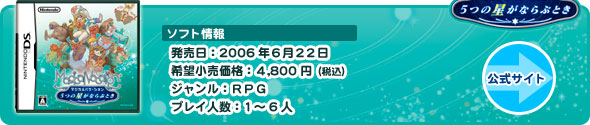
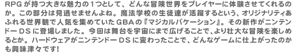
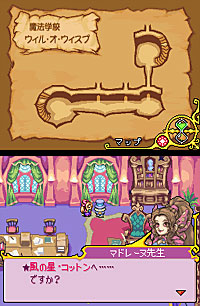
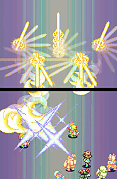
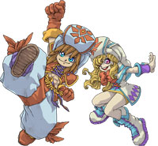
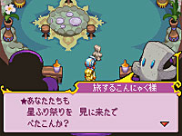

|
|
|  |
 |
|
 まずは冒険するメインキャラクター達の名前入力からスタート。主人公をふくめて6人もいるので、良い意味で悩ましいところです。ここでじっくりと考え込むのもRPGの楽しさですよね。色々な種族の子供が集まる魔法学校の生徒達ということで、どのキャラクターのグラフィックもじつに個性的ですよ。それは顔やフォルムだけではなくて、服や装飾品などもふくめてトータルのデザインとして訴えかけてきます。メインキャラクター達はそれぞれ属星（注）を持っているのですが、属星のイメージをうまく連想させてくれるのもイイ感じですね。
そして、ゲーム中の操作はすべてタッチペンで可能。タッチペンを使って、目的の画面までスムーズにたどりつくことができます。また、ニンテンドーＤＳの上下画面をうまく利用してスマートに情報を見せてくれます。こういう部分は長時間プレイすればするほど気になってくるところですよね。
（注：「火、木、風、土、水」などの属性を持った惑星。キャラクターごとに1つの属星をもっています。） |
 操作のスマートさはバトル時でも発揮されています。従来の十字ボタンでコマンドを選んでから決定するという2アクションよりも、画面をタッチする1アクションだけですむので、じつに快適にバトルが進んでいくんです。魔法を使ったときの演出も上下2画面をつなげて表現したハデなエフェクトで大迫力。この体験レポートを書いている時点ではまだメインキャラクター全員がパーティに加わっていないのですが、他の魔法ではどんなエフェクトが見れるか楽しみです。
このバトルでポイントとなるのが先ほども出てきた属星です。属星には得意・苦手な相性があり、相手の苦手な属星で攻撃することで有利に戦えるわけです。キャラクターたちは自分の属星の動きによって一定周期でパワーアップします。それは属星の運行図でチェックすることになるのですが、この5つの惑星は今回の冒険の舞台でもあります。バトルの中にも宇宙を舞台にした世界観が生きているんですね。 |
|
 コツをつかむまで少し苦労したのが、タイミング良くキャラクターをタッチすることで魔法の威力がアップするマジカルブレイク。プレイした方ならわかると思いますがバトル時に魔法を詠唱するとキャラクターの周囲に呪文が回転しますよね？それが消える直前にタッチするのが正解みたいです。成功するとキャラクターを中心に光が放射状へ広がるエフェクトが加わります。通常よりも約1.5倍のダメージを与えるようなのでバトルがグンとラクになるはず。大勢のパーティでマジカルブレイクが連続で決まると、かなり気分もノッてきますよ！
バトル時には選べるコマンドボタンは多数あるし、パーティの前列と後列で魔法の効果範囲などが変わるので、前述した属星の運行図もふくめてゲーム終盤では色々な戦略を練ってバトルができます。様々な戦略をを“画面にタッチ”という1種類の操作だけでシンプルに進められることや、コマンド選択時の情報を状況に応じて上下画面で確認できることは、ニンテンドーＤＳでRPGを楽しむ上での大きなメリットだと実感させられます。
 システム面だけではなく、もちろんこの独特な世界観にも大注目。と、とにかくヘンテコなサブキャラクター達が次々と登場します。それも外観だけではなく彼らがしゃべるメッセージにも味があってテキストを読んでいるだけでも楽しいんです。ファンタジー系RPGにおけるサブキャラクター設定の定番って、色々とあると思いますが、このゲームではそんな常識を吹き飛ばすパワーで数々の個性派が登場しますよ。どんなサブキャラクターがいるのかは開発スタッフインタビューで少しだけ紹介されているのでお楽しみに。
また、どこでもセーブが可能で回復アイテムを簡単に手に入れることができたり、マップ同士のワープポイントが豊富に用意されている点など、ヘタな苦労はさせない親切設計も好印象です。プレイヤーもじっくり物語を楽しむことができます。その意味では誰にでもオススメできるRPGといえるかと。ぜひ、この摩訶不思議なバケーションを楽しんでみてください。 |
|
|